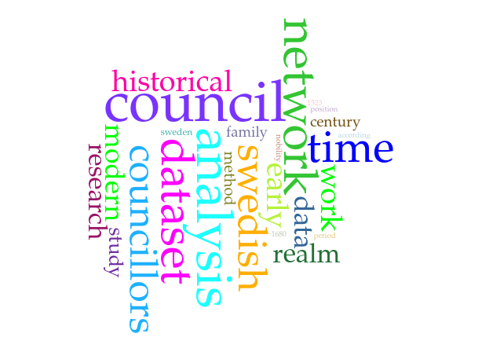

Tehtävät ja linkkilista Laadullisten aineistojen työmenetelmät historiatieteessä, syyslukukausi 2026 tekstinlouhinnan moduuliin.
Yleinen esittely tekstinlouhinnasta ja sen käytöstä historiantutkimuksessa sekä vakoilussa
Tutustutaan frekvenssin käsitteeseen. Käytetään työkaluna
Googlen Trends–palevelua.
Tutustukaa palveluun ja säätäkää hakualueeseen ja aikarajaukseen
liittyviä asetuksia.
Keksikää fraasi, joka on:
Jatketaan frekvenssien teemaa. Käytetään työkaluna ilmaista verkossa toimivaa Voyant Toolsia. Valitse sopiva lyhyehkö teksti kuten vanha essee tai verkkosivu ja syötä se työkaluun. Tarkastellaan tuloksia:
Huomatkaa: Netissä toimiviin työkaluihin ei kannata ikinä syöttää henkilökohtaisia tietoja sisältävää tai muuten yksityistä sisältöä!
Voyant Tools esittää aineistossasi sanojen esiintymismäärät (frekvenssit) sanapilven (word cloud) muodossa. Sanapilvessä tekstin yleiset sanat ovat isolla ja harvinaiset pienellä. Sanapilvet olivat erityisesti 2010-luvulla suosittu tapa tiivistää ja visualisoida eri kokoisia tekstikokonaisuuksia kuten blogeja, artikkeleja ja poliittisia puheita.
Sanapilvet menettivät suosionsa ja katosivat 2020-luvun taitteessa. Miksi?
Lukekaa Marti Hearst’n
artikkeli
ja pohtikaa mitkä ovat sanapilvien
vahvuuksia ja heikkouksia, ja voiko niitä silti käyttää tiedon esittämiseen?
Selvittäkään mitä tarkoittaa termi "algospeak" tai "Voldemorttaaminen"
ja miten se liittyy tekstinlouhintaan?
Pohtikaa lisäksi:
Tekstinlouhinnan tekniikat ja työkalut
Työvaiheet eivät yleensä mene näin siistissä järjestyksessä, ja usein eri työvaiheita pitää toistaa tai uusia
Katsokaa Otto Tarkan keräämä lista suomalaisista yleissanoista: Finnish stopwords. Miettikää mitkä ovat yleissanoja seuraavissa teksteissä:
Ollako vai ei olla, siinä pulma:
Jalompaa onko hengen kärsiä
Kaikk' inhan onnen iskut sekä nuolet
Vai käydä miekkaan tuskain merta vastaan,
Lopettain kaikki? – Kuolla, – nukkua,
Ei muuta; – luulla, uness' että päättyy
-- Shakespeare (suom. Paavo Cajander)
Linnun tyypillinen ääni on varismainen mutta hiljaisempi rääkynä, jota närhi saattaa joskus matkia erehdyttävästi. Laulu on hiljaista, närhimäistä tai harakkamaista kitinää ja narinaa.
-- Wikipeida: Pähkinähakki
Jatketaan yleissanojen teemaa: poistakaa tekstieditorilla (esimerkiksi Notepad) tai muulla tekstinkäsittelyohjelmalla yleissanoja viime luennolla käytetystä tekstipätkästä.
Tehdään nyt sama analyysi uudelleen Voyant tools palvelussa. Miltä tulokset nyt näyttävät?
Sanapilviesitys allekirjoittaneen pro-gradutyön esikäsitellystä johdannosta. Mistä aiheesta gradu mahtaa olla?

Rakentakaa esimerkiksi Exceliä käyttäen yhteen taulukkoon Bag of Words –esitys seuraavista lauseista:
Algoritmi Bag of Words –esityksen luomiseen
Tutustutaan nyt ryhmissä kahteen viimekerralla mainittuun yleiseen tekstinlouhinnan menetelmään klusterointiin ja luokitteluun.
Mikä ero näiden menetelmien välillä on?
Keksittekö sovelluksia, johon jompi kumpi soveltuu paremmin?
Kun algoritmi mokaa. Pikaruokaketju KFC (Kentucky Fried Chicken) oli
automatisoinut markkinointiaan itsenäisellä tietokoneohjelmalla eli botilla.
Botin tarkoitus oli lähettää yrityksen sovelluksen kautta viestejä asiakkaille
kansallisina juhlapäivinä. Marraskuussa 2022 markkinointi meni
katastrofaalisesti vikaan. Lukekaa joko
BBC:n artikkeli tai
ylen artikkeli
aiheesta.
Mitä tapahtui ja mistä epäonnistuminen mahdollisesti johtui?
Mitä tapaus kertoo historiallisen tiedon ja kulttuurisen ymmärryksen
merkityksestä?
Mitä ajatuksia tapaus herättää?
Yhteenveto: paluu kylmään sotaan ja käytännön harjoituksia
Testataan sentimenttianalyysiä Microsoft Formsin avulla. Menkää oman ryhmän Forms sivulle. Valitkaa siellä mielestänne sopivin vaihtoehto kuvaamaan kutakin asiakaspalautteen sävyä. Tämän jälkeen tutustutaan koko ryhmän antamiin tuloksiin.
Pohtikaa sitten seuraavia kysymyksiä:
Mitä käyttötarkoituksia sentimenttianalyysillä voi olla?
Mitä ongelmia sentimenttianalyysiin saattaa liittyä?
Tilastotieteen historia -seminaariin tehty diaesitys MCMC -satunnaislukumenetelmistä.
Katsotaan video